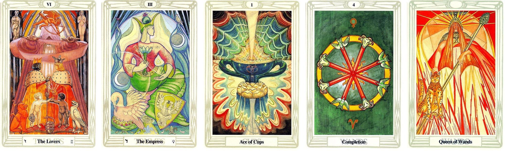
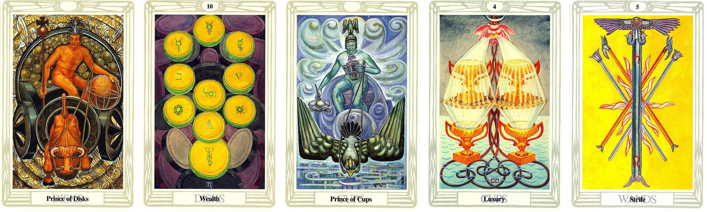

問題：詢問感情未來發展走向

抽出來的牌面順序：
戀人 女皇 聖杯1 權杖4 權杖皇后
解牌分析
感情穩穩發展有升溫的現象
第一張牌
這段關係的開始 是在彼此不是很熟悉的情況下給出承諾的
第二張牌
因為不是很熟悉 所以彼此都在觀察對方 但是是穩定的 愛的不是很轟轟烈烈 反而是溫溫的
第三張牌
目前階段的感情狀況 算是再往下一個階段開始發展 因為前面的不熟悉 到後面的觀察 到現階段更加認定彼此的感情
第四張牌
感情穩固的慢慢加溫 不是轟轟烈烈 就是比一開始再升溫 拉近距離的感覺
最後一張牌
拉近彼此距離後 有一方在感情上會比較強勢 大女人主義
最終的答案
這段感情走的很穩定 溫溫的 不會愛的太激烈 反而是好事
問題：詢問維持現況模式 感情發展如何

抽出來的牌面順序：
圓盤王子 圓盤十 聖杯王子 聖杯四 權杖五
解牌分析
主動性較不足 被動性較高 想法比較不會說出口
第一張牌
這個人 在物質領域上 正在衝刺 緩慢穩定 踏實感 有目標性
第二張牌
物質充沛 不用過多擔憂 較務實
第三張牌
在現階段中 從圓盤王子 到聖杯王子的轉變 代表著對方 在追求理想的目標
第四張牌
較近的未來 因為感情的太過穩定 沒有熱情 而感覺需要更多的安全感 有引發內心對這段感情渴望有更多不一樣的面向
最後一張牌
較遠的未來 因為對感情渴望有不同的面相 就會有小困擾產生 這問題 不是主動引發的 而是內心渴求變化 想讓感情升溫
最終的答案
維持現階段的狀態 沒有什麼不好 需要多留意未來
感情有時太過穩固 會需要其他刺激 維持彼此的感情
需要注意 不可用太過極端的方式來讓感情升溫 反而會有適得其反的效果出現